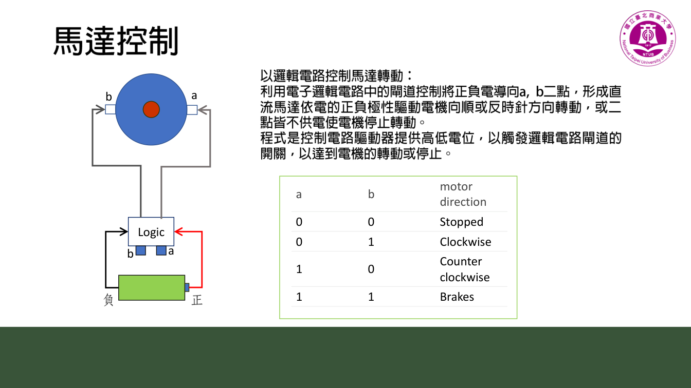
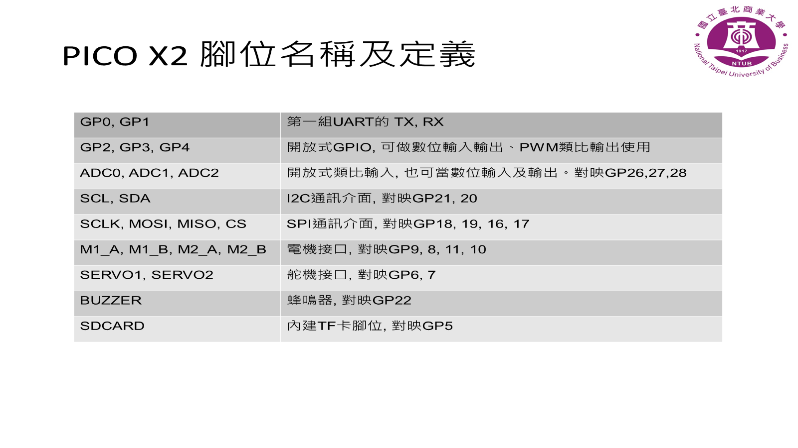

不拆成基礎單元，而是用原 PDF 建立完整板子導讀與腳位對照
主題 07
本主題依照機器人程式設計實務-Python.pdf 與相容性驗證報告，整理 Raspberry Pi Pico 主板、腳位、輸入輸出與馬達控制的授課導讀。

不拆成基礎單元，而是用原 PDF 建立完整板子導讀與腳位對照
保留原教材檔案下載，同時把上課時需要先說明的概念、操作順序與關鍵程式整理成網頁版。
Before You Start
這一章可以當成查表與除錯工具，協助學生把腳位、程式與實際板子對起來。
包含 Thonny 連線、MicroPython 解譯器、mango 函式庫上傳、import 測試與馬達方向校正。
打開開始設定遇到元件沒有反應時，先用腳位表確認接線、功能腳位與程式中的 Pin 是否一致。
下載 Python PDFFile Location
PDF 是給學生與老師查表用，留在電腦閱讀即可；Pico 上只需要放正在練習的 MicroPython 程式。
downloads/
└─ robot-programming-practice-python.pdf ← 腳位與電路板導讀Raspberry Pi Pico /
├─ pin_test.py ← 腳位測試
├─ pwm_test.py ← PWM 測試
└─ main.py ← 只有最終作品才需要Learning Route
這個主題不再拆成「電路板基礎教學」，而是用 PDF 作為主教材，先建立老師與學生都能查閱的腳位導讀。

LED、按鈕、蜂鳴器、RGB、超音波、馬達、I2C 循跡感測器都可以從同一塊板子出發。
從 Pin、PWM、ADC、I2C 到馬達方向邏輯，讓硬體位置對應到程式語法。
Board Map
以下整理自 Python PDF 與相容性驗證報告，方便老師備課時快速確認各章節的硬體依賴。
| 功能 | 教材腳位 | 網頁教材使用方式 |
|---|---|---|
| 內建 LED | GP25 | 入門 cases 使用 Pin(25, Pin.OUT) |
| 按鈕 | GP3 | 數位輸入，適合說明上拉/下拉與狀態判斷 |
| 蜂鳴器 | GP6 | 使用 PWM(Pin(6)) 製作聲音回饋 |
| RGB 彩燈條 | GP2，6 顆 WS2812B | 感測輸出主題用來呈現顏色狀態 |
| 超音波 / 距離 RGB | RGB GP14，聲波 GP15 | 感測輸出與避障任務使用 |
| 右馬達 M1 | GP12 / GP13 | 小車移動與無人車任務使用 |
| 左馬達 M2 | GP11 / GP10 | 小車移動與無人車任務使用 |
| I2C | SDA GP20，SCL GP21 | 四路循跡感測器使用 |
| 類比輸入 A0 | GP26 | 電位器與類比輸入 cases 使用 |
| 外接 LED D7 | GP7 | PWM LED cases 使用 |
Key Code
第一段讓學生理解輸入與輸出，第二段讓老師銜接到馬達控制邏輯。
from machine import Pin
import time
led = Pin(25, Pin.OUT)
button = Pin(3, Pin.IN)
while True:
if button.value() == 1:
led.on()
else:
led.off()
time.sleep(0.05)# M1 右馬達：GP12 / GP13
# M2 左馬達：GP11 / GP10
def set_motor(pin_a, pin_b, direction):
if direction > 0:
pin_a.value(1)
pin_b.value(0)
elif direction < 0:
pin_a.value(0)
pin_b.value(1)
else:
pin_a.value(0)
pin_b.value(0)How To Use
確認課堂要用的 LED、按鈕、蜂鳴器、感測器或馬達是否與主板腳位一致。
先做 LED 或按鈕，再逐步銜接蜂鳴器、RGB、感測器與馬達。
如果程式沒反應，優先檢查腳位、接線與元件方向，再檢查程式邏輯。
學生熟悉單一元件後，再把輸入、輸出、馬達與感測器組成小作品。
Completion Check
這不是考試，而是讓學生知道自己是否已經準備好進入下一個主題。
我能用腳位表查出 LED、按鈕、蜂鳴器、馬達與感測器的接腳。
我能判斷一個元件需要 Pin、PWM、ADC、I2C 還是 UART。
我能用 PDF 對照網頁 case，找出程式中的腳位來源。
我能用腳位表作為除錯第一步，而不是只改程式。
Continue